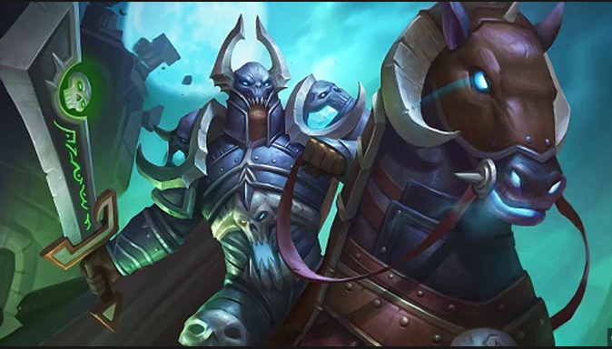

Darion Mograine is the leader of the Four Horsemen and the former Highlord of the Knights of the Ebon Blade. The son of Alexandros Mograine, one of the Highlords of the Knights of the Silver Hand and the original wielder of the Ashbringer, Darion was a paladin of the Silver Hand, and later of the Argent Dawn. After his father was murdered by his brother Renault Mograine, he came into possession of the corrupted Ashbringer, and tried to save his father's souls inside. During the First Battle for Light's Hope, Darion used the sword to kill himself, destroying the Scourge forces and releasing his father's soul.[4]
When the Lich King's control of his death knights was broken, his former champions sought revenge for the horrors committed under his command. After their vengeance was won, the death knights found themselves without a cause and without a home. One by one they trickled into the land of the living in search of a new purpose. Frost sharpens their strikes; blood fortifies their bodies; and undeath allows them to erupt in unholy rage in the heat of battle. A thousand atrocities are etched in the eyes of every death knight, and foes who gaze into them too long will feel the warmth pulled from their bodies, replaced with cold steel.[3]